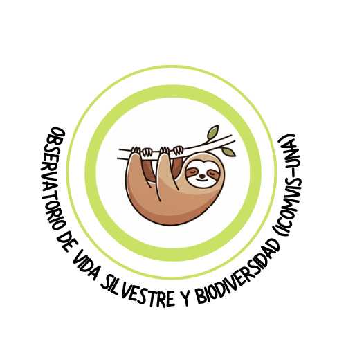

Ilustración por Gemini 2.0 Flash y Maritza Ramírez
• ¿Cuáles parques nacionales hay en Guanacaste?
• ¿Qué especies de aves son comunes en Monteverde?
• ¿Por qué Costa Rica es un hotspot de biodiversidad?
• Nómbrame cinco especies endémicas de Costa Rica